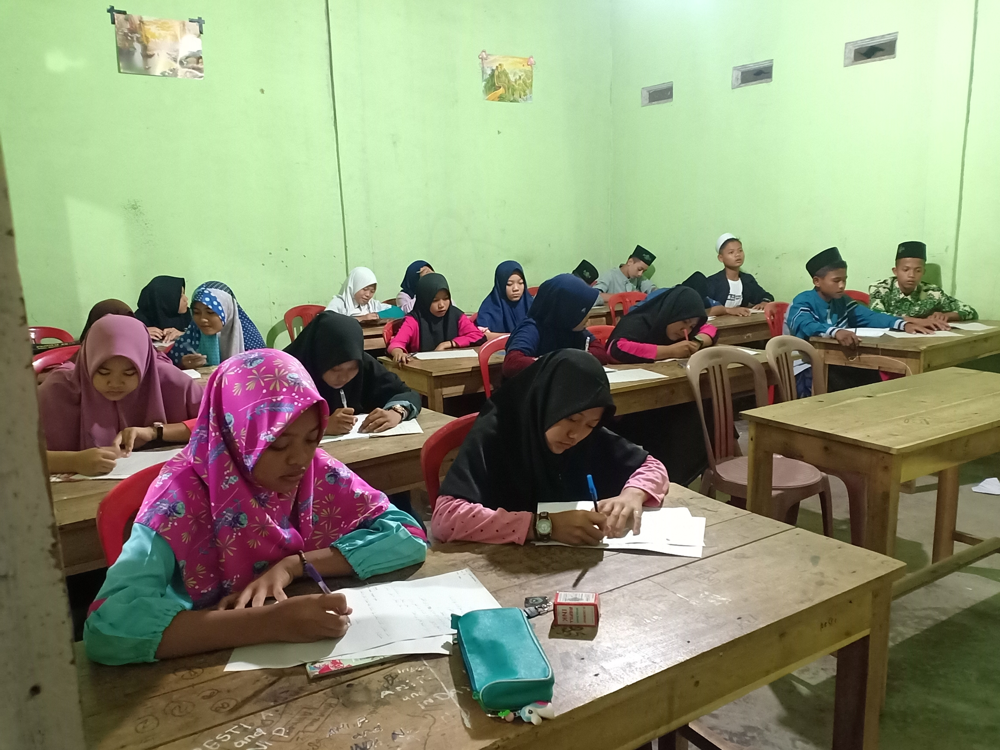

Suara-Suara yang Menggema di Tanah Leluhur
Di antara gemuruh ombak lautan dan desau angin di hutan-hutan pertiwi, selalu terdengar bisik-bisik: adakah suara kenabian pernah bergema di tanah pusaka ini?
Baca SelengkapnyaDi antara gemuruh ombak lautan dan desau angin di hutan-hutan pertiwi, selalu terdengar bisik-bisik: adakah suara kenabian pernah bergema di tanah pusaka ini?
Baca Selengkapnya